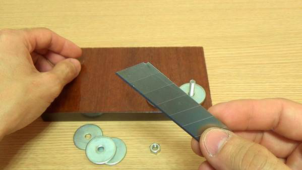

Чертежи и описание работы по созданию бутылкореза пластиковых бутылок
Пластиковые бутылки в настоящее время являются самой распространенной тарой, в которой продаются вода, квас, пиво, соки и другие напитки. В любом доме время от времени эти бутылки скапливаются, после чего их выкидывают. Но, оказывается эта использованная тара может стать полезным материалом для применения в хозяйстве. Без особого труда, аккуратно нарезав бутылку, можно получить крепкую термоусадочную ленту. Но, совершить этот процесс ножницами ровно не получится, нужно соорудить бутылкорез пластиковых бутылок, чертеж и конструкция которого, совсем несложная и делается очень быстро.
Содержание [Показать]
Назначение бутылкореза
С помощью бутылкореза, можно за короткий промежуток времени качественно нарезать термоусадочную ленту из пластиковых бутылок. Она в домашнем хозяйстве, на даче будет просто незаменима. Благодаря прекрасным свойствам пластика, придумали использовать бутылку вторично – в виде ленты. При нагревании она плавится, дает усадку, становится очень прочной, ее практически невозможно разорвать.
Ленту можно нарезать любого размера: от тонкой, как леска и до одного сантиметра шириной. А можно и еще шире, при желании. После связывания лентой различных элементов, достаточно несколько секунд прогреть феном место связки, и прямо на глазах будет виден эффект усадки и утяжки ленты. Конструкция становится очень прочной.
Главная, базовая деталь всей конструкции — острое лезвие, его легко можно извлечь из канцелярского ножа. Режущая поверхность у ножа достаточно острая. Она не нуждается в дополнительной заточке. Промежуток, со стороны режущей поверхности, будет координировать размеры нарезаемых полос.
Полученную термоустойчивую ленту используют для:
· обмотки рукояти инструментов;
· плетения метелок, щеток, рыболовных донок;
· использования как веревки для связывания различных элементов при хозяйственных работах, подвязки растений в саду;
· для декоративных целей, изготовления спиральных гирлянд.
При использовании бутылки объемом на 2 л для нарезки, выходит около 35 метров ленты, толщиной 1,5 мм.
Этапы изготовления своими руками
Приспособление можно сделать простое ручное и усложненное с фиксацией. Бутылку перед началом разрезания освобождают от дна, делают небольшой надрез в нижней части. Далее от этого надреза нарезают ленты по желаемому размеру. Отходами станут только дно с горлышком.
Изготовление бутылкореза можно разделить на несколько этапов:
· выбор конструкции;
· приобретение материалов, подготовка нужного инструмента;
· составление чертежа устройства;
· изготовление и дальнейшее использование.
Подготовка материалов и инструментов
Бутылкорез можно сконструировать разными способами, в зависимости от этого, потребуются и различные материалы. Для первого способа более легкого, набор материала и инструментов следующий:
· доска из ламината 30 х 20;
· шайбы разных размеров: большие, маленькие;
· болты и гайки;
· лезвие от канцелярского ножа;
· дрель со сверлами;
· карандаш;
· шуруповерт и гаечный ключ.
Перед началом работы над вторым видом бутылкореза, более сложным, необходимо подготовить материалы и инструменты в следующей последовательности:
· металлический отрезок швеллера или алюминиевый уголок;
· лезвие от канцелярского ножа, карандаш;
· гайки, шпильки М5 или М6, шайбы, болты, деревянный брусок распорку;
· металлическую пластину;
· дрель, отвертку, линейку;
· ножовку по металлу.
Если требуется больше тонкой ленты, то станок лучше сделать по разработанному чертежу, чтобы все рабочие элементы идеально совпадали.
Разработка чертежа
Бутылкорез можно изготовить разных видов. Чтобы вся конструкция получилась точной, предварительно лучше составить чертеж выбранной модели. Ниже показан готовый сварочный чертеж бутылкореза пластиковых бутылок Адвоката Егорова.
По чертежу понятно, что конструкция не стационарная. Ее можно использовать как в помещении, так и на улице. Она небольших размеров, очень удобная в обращении.
Чертеж бутылкореза универсальный. Благодаря этой конструкции, можно резать ленты любых размеров, в большом количестве. Конструкцию невозможно сломать.
Чертеж можно упростить, если не хочется возиться с металлом, можно сделать простой вариант бутылкореза из канцелярского ножа и деревянного бруска или ламината. На чертеже будет только разметка для крепления шайб, лезвия в основании ламината.
Но есть и усложненная форма устройства, для изготовления которой чертеж крайне необходим. Чертеж конструкции с ручкой показан ниже. С помощью этой конструкции получается очень большое количество ленты, разных размеров за короткий промежуток времени.
Сборка деталей с учетом изделия
В зависимости от выбранной конструкции бутылкореза, сборка будет отличаться одна от другой. Но в любом случае, она не займет много времени и труда.
На основе канцелярского ножа
Сборка упрощенной модели состоит из следующих этапов:
1. Подготавливают материал: отрезок ламината, шайбы, гайки и болты, лезвие и весь необходимый инструмент.
2. На середине доски из ламината располагают две шайбы бок о бок, помечают карандашом места для отверстий, просверливают.
3. Ставят 2 болта и закрепляют, их следует «утопить».
4. Для нарезки ленты по размеру с толщиной двух шайб, кладут на оба болта по две шайбы.
5. Лезвие надевают на любой из болтов.
6. Укладывают на болты опять по одной шайбе.
7. Лезвие настраивают, чтобы заметная часть режущего края находилась в участке кратчайшего пути от одной шайбы до другой.
8. Шайбы равняют, подтягивают гайки. Бутылкорез готов. Его, возможно, укреплять на столе для удобства саморезами.
Одеваем на каждый болт по три шайбы.

Лезвие от строительного ножа, самая главная деталь бутылкореза.
Вставьте лезвие от строительного ножа.
Оденьте шайбы и закрутите гайки.
Закрепите бутылкорез на крышке стола струбциной.
От бутылки предварительно отрежьте дно и сделайте начало ленты. Вставьте бутылку в бутылкорез.
Левой рукой прижмите бутылку вниз, а правой без рывков тяните ленту.
Модель Егорова
Усовершенствованная конструкция самодельного бутылкореза Егорова представляет собой металлический уголок или швеллер, на который закрепляется режущая часть. Этапы изготовления следующие:
1. Подготавливают материал с инструментом.
2. На металлическом швеллере или уголке просверливают сквозное отверстие для болта М5 так, чтобы оно совпадало с отверстием в лезвии.
3. Отступают от отверстия на ширину гайки.
4. Делают пропилы разных размеров — глубины на расстоянии. Глубина каждого пропила — это ширина будущей ленты. Пропилы зачищают наждачной бумагой от неровностей и заусениц.
5. Внутри уголка на уровне пропилов крепится канцелярское лезвие с помощью болтов и гаек (в просверленных отверстиях). Чтобы оно не ездило по сторонам, можно добавить ему упор в виде скобы или бруска по желанию.
6. Укрепляют шток тоже на болтах и гайках.
7. Для оси можно использовать штырь или обыкновенный гвоздь. На нем делают резьбу до 20 мм, край резьбы загибают. Ось будет подавать небольшой угол отрезания ленты, и подавать бутыль. Конструкция готова.
Некоторые нюансы при сборке:
· несмотря на то, что лезвие у конструкции будет находиться внутри, разметку проводить надо снаружи;
· важно не забыть сделать отверстие для шпильки;
· на прилегающей стороне пропилы должны получиться чуть шире, для более плотного прилегания бутылки к лезвию.
Лезвие нужно расположить в уголке таким образом, чтобы оно было направлено в сторону бутылки, для правильного уклона нарезания ленты. Бутылки из пластика для нарезки на ленты стоит выбирать ровные, без рельефных изгибов, от этого может ухудшаться качество ленты. Очень важно в самом начале работы, после удаления дна, сделать ровный, идеальный надрез на бутылке.
Конструкцию изготовить своими руками очень просто и нужно. В домашнем хозяйстве появится на многие годы полезный инструмент, с помощью которого можно будет постоянно снабжать себя полезным подручным материалом.